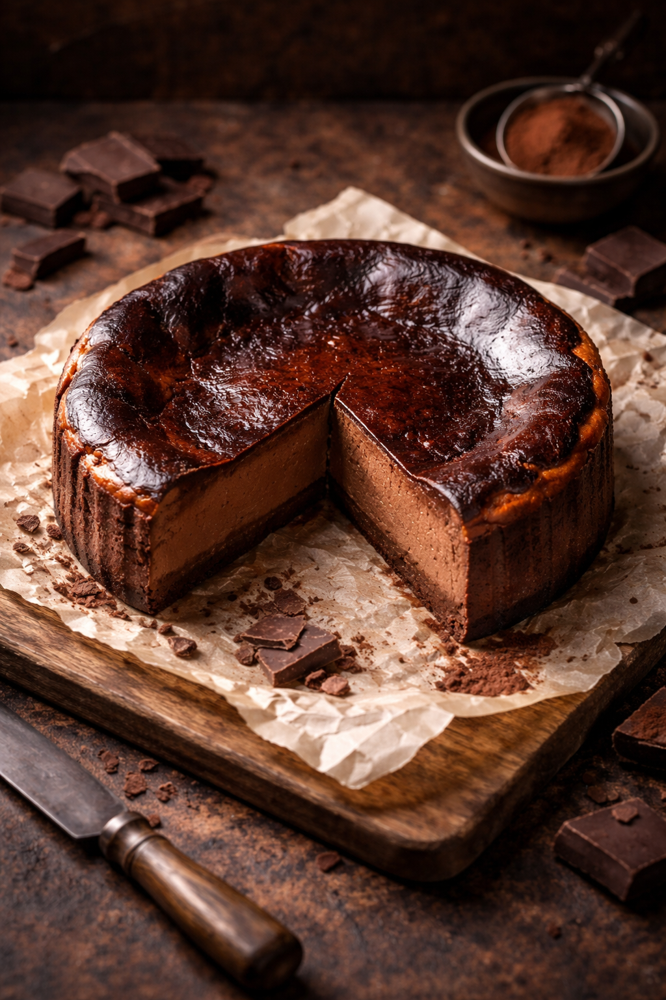

Doces · Tortas e bolos
Cheesecake basque de chocolate

Ingredientes
- 500 g de cream cheese em temperatura ambiente
- 150 g de açúcar
- 4 ovos
- 150 g de chocolate meio amargo (70%) derretido
- 200 ml de creme de leite
- 1 colher (chá) de essência de baunilha
Modo de preparo
- Preaqueça o forno a 200 °C. Forre uma forma redonda de fundo removível com papel manteiga.
- Bata o cream cheese com o açúcar até ficar liso.
- Acrescente os ovos um a um, batendo após cada adição.
- Incorpore o chocolate derretido e o creme de leite; misture até homogêneo.
- Despeje na forma e asse até a superfície queimar e o centro ficar levemente bamboleante (~50–60 min).
- Deixe esfriar completamente e leve à geladeira por pelo menos 4 horas antes de servir.
Cheesecake basco — superfície caramelizada, interior cremoso.